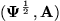
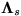
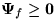

|
You are here : Control System Design - Index | Book Contents | Appendix D | Section D.4 D. Properties of Continuous Time Riccati EquationD.4 Convergence of solutions of the CTARE to the stabilizing solution of the CTAREFinally we show that under reasonable conditions, the solution of the CTDRE will converge to the unique stabilizing solution of the CTARE. In the sequel, we will be particularly interested in the stabilizing solution to the CTARE. Lemma D.5 Provided (A, B)
is stabilizable and 
has no unobservable poles on the imaginary axis and
Proof We observe that the eigenvalues of H can be grouped so that  contains only eigenvalues that lie in the form left half plane. We then have that
given that Hs and -Hu are matrices with eigenvalues strictly inside the LHP. The result then follows from (D.1.16) to (D.1.17).
Remark 1.1 Actually provided is detectable, then it suffices to have  in Lemma D.5.
|